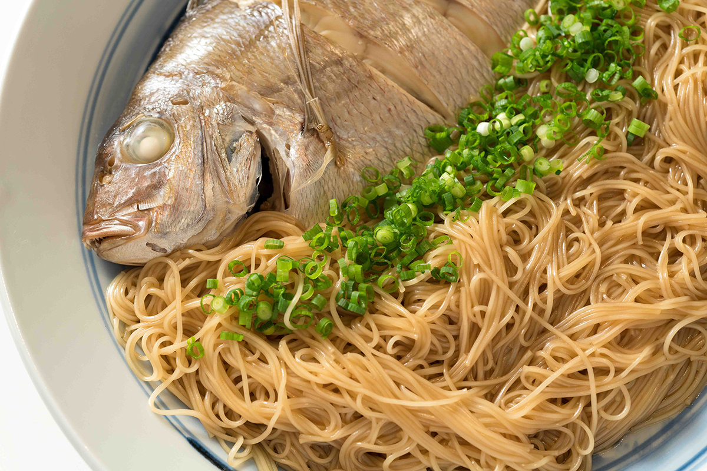
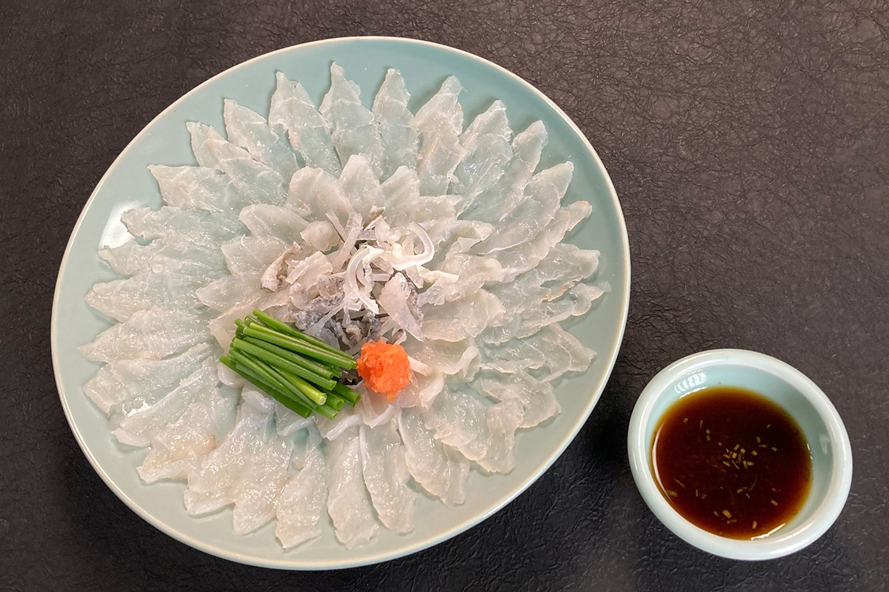
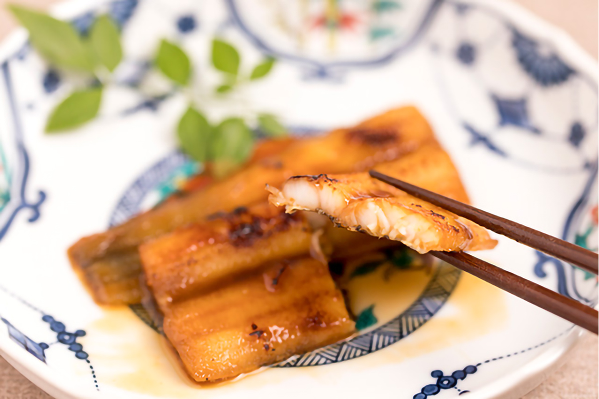

Префектура Кагава · Сэтоути · Море и еда
Сэтоути: течения, которые делают рыбу вкусной

Около 700 островов создают в Сэтоути ту самую картину множества островов, которой любуются с берега. Здесь издавна известны «акаси-тай» и «акаси-дако», а также морской угорь анаго и рыба савара. Разбираться в том, почему здешняя рыба такая вкусная, помогает специалист по магме Ёсиюки Тацуми, который изучает связь между рельефом Японии и японской кухней.
Рыба
Мускулистая рыба из быстрых течений
За вкус рыбы отвечает в том числе количество АТФ, аденозинтрифосфорной кислоты: именно она дает начало инозиновой кислоте, отвечающей за насыщенный вкус. Рыба Сэтоути растет в быстрых течениях, поэтому становится мускулистой и накапливает много АТФ, и это считается главной причиной ее вкуса.

Кухня
Что выросло из этого моря
В Кагаве на праздничный стол ставят тай-сомэн, лапшу сомэн с морским лещом: целую тушку леща, приготовленную в соусе, раскладывают вместе с лапшой на большом блюде. Блюдо готовят на свадьбы и по случаю закладки дома, а в эпоху Эдо оно под названием «таймэн» входило в меню самураев.
Из этого же моря выросла и кухня Киото: щуку-угря хамо везли в Киото живым, потому что он хорошо переносит дорогу. Костей в нем много, поэтому без «хонэкири», мелкой надрезки костей, не обойтись: считается, что повар киотоской кухни становится мастером, только когда умеет делать ее чисто.

Геология
Почему течения такие быстрые
Причина в рельефе. В Сэтоути есть проливы и участки, где поднятая земля сузила море, а между ними лежат нада, широкие открытые участки моря, которые образовались там, где земля опустилась и дно просело в виде бассейна. Такие поднятые и опущенные зоны идут поочередно, и из-за этого приливная волна из Тихого океана приходит сюда с задержкой, порождая быстрое течение. Цепочка этих зон вытянута в одном направлении, с северо-востока на юго-запад.
Около трех миллионов лет назад движение Филиппинской плиты сменилось с северного на северо-западное, и Западная Япония стала испытывать сжатие: так появились чередующиеся поднятия и опускания, похожие на складки. На границах этих зон проходят разломы, и с одним из них связано землетрясение в южной части префектуры Хёго в 1995 году. Вкусная еда и суровые испытания, как это часто бывает, оказываются двумя сторонами одного явления.
Границы зон хорошо видны на карте: Осакский залив, Харима-нада, Хиути-нада и Иё-нада чередуются с проливом Акаси, проливом Бисан и проливом Курусима.